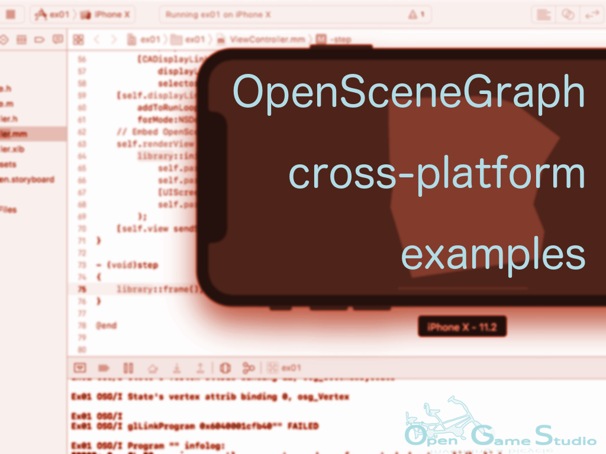

2018-04-20 00:00

This article summarizes the work we did to produce the first two cross-platform OpenSceneGraph examples.
By the time the first technology demonstration of OGS Mahjong 2 has been released, we've already had issue request (to explain how to load images with OpenSceneGraph on Android) hanging for some time. We considered creating a new tutorial for OpenSceneGraph cross-platform guide at first. However, we realized that it's time-consuming and excessive for such a tiny topic (compared to what an average game has) as image loading. We decided to continue sharing our knowledge in the form of concrete examples. That's how OpenSceneGraph cross-platform examples were born.
Each example:
The first two examples cover the following topics:
We will be adding new examples as we proceed with OGS Mahjong 2 development.
That's it for summarizing the work we did to produce the first two cross-platform OpenSceneGraph examples.